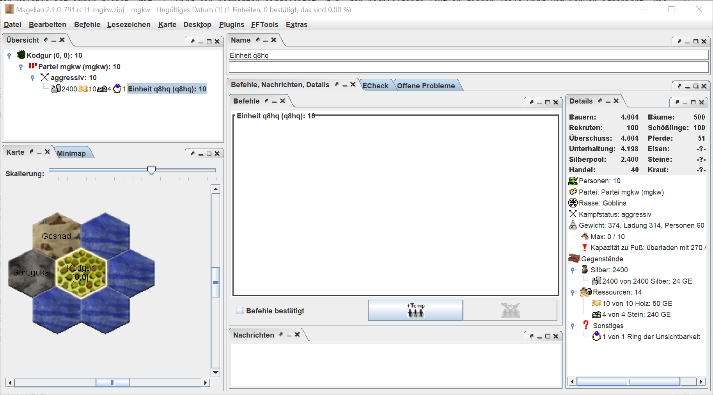

Goblins: Runde 1
Runde 1
Die Auswertung
Der erste Report ist da. Wir haben eine zip-Datei mit drei Dateien erhalten:
- Eine Datei mit der Endung *.nr – der „Normalreport“ lässt sich in jedem Texteditor angucken. Er beinhaltet den aktuellen Statusbericht unserer Partei in Textformat und lässt sich ohne irgendwelche weiteren Tools lesen.
- Eine Datei mit der Endung *.cr – der „Computerreport“ lässt sich in speziellen Tools (z.B. Magellan) öffnen die den zuvor genannten „Normalreport“ visualisieren.
- Und eine Datei mit der Endung *.txt – die Zugvorlage kann man benutzen um seine Befehle für die aktuelle Runde zu schreiben. Wir werden in diesem Tutorial Magellan nutzen und die Vorlage daher nicht benutzen.
Obwohl wir mit Magellan arbeiten werden, ist es wichtige auch in den nr zu gucken. Gerade als Neuling kann die grafische Aufbereitung verwirren oder zuviele Informationen bereitstellen. Außerdem zählt im Zweifel der Report vom Server, es kann schließlich auch immer ein Anzeigebug in dem Tool sein, das man für den cr nutzt.
Im Nachfolgenden werden wir uns daher zunächst einmal den nr angucken.
Report für Tutorial, Sunday, 15. October 2023, 21:19
Wir schreiben die zweite Woche des Monats Feldsegen im Jahre 1 des zweiten
Zeitalters. Es ist Sommer.
Partei mgkw (mgkw), Goblins/Kein Magiegebiet (goblinplayer@drachensgrab.de)
Bitte denke daran, deine Befehle mit dem Betreff ERESSEA 1 BEFEHLE an
tutorial@drachensgrab.de zu senden.
Deine Partei hat 10 Personen in 1 von maximal 2500 Einheiten.
Optionen: AUSWERTUNG COMPUTER ZUGVORLAGE STATISTIK ZIPPED ADRESSEN
Hinweise
Deine Partei ist noch die nächsten 6 Wochen immun gegen Angriffe.
Ereignisse
Das Passwort für diese Partei lautet exID6fzR.
Erstmal erfahren wir, wann der Report erzeugt wurde. Das kann hilfreich sein, wenn man mal checken will, ob man in den aktuellsten Report guckt. Außerdem erfahren wir, welche Jahreszeit gerade im Spiel ist – hier die 2. Woche im Monat Feldsegen. Aktuell ist also Sommer. Wie sich die Jahreszeiten auswirken findet man im Wiki. Für uns als Goblins kann das aber erstmal egal sein.
A propos, unsere Partei hört aktuell auf den klangvollen Namen „Partei mgkw“ und unsere Parteinummer ist „mgkw“. Wir spielen als Rasse Goblins und haben noch kein Magiegebiet gewählt.
Als nächstes erfahren wir noch, wohin wir unsere Befehle schicken müssen und wie der Betreff der Mail lauten muss, damit der Server erkennt, dass es sich hierbei um Befehle handelt.
Aktuell besteht unsere Partei aus 10 Personen in einer Einheit. Das wir mit 10 Personen starten ist ein Startgeschenk der Goblinrasse. Maximal dürfen wir 2500 Einheiten in unserer Partei haben.
Die nächste Zeile erklärt welche Optionen aktuell aktiviert sind.
Außerdem ist unsere Partei noch die nächsten 6 Wochen immun und dadurch vor Angriffen, Diebstahl und ähnlichem geschützt. Wir haben also ein paar Runden Zeit um uns eine Waffe zu bauen und wenigstens unsere Heimat zu bewachen.
Der Server hat außerdem das Passwort "exID6fzR" generiert. Das werden wir in unserem ersten Zug durch etwas einfacher zu merkendes ersetzen.
Nach dem Kopf der Auswertung kommt endlich unsere erste Region und unsere erste Einheit:
------------------------------------------------------------------------------
Kodgur (0,0), Wald, 500/100 Bäume, 4004 Bauern, 83960 Silber, 51 Pferde. Im
Nordwesten der Region liegt das Hochland von Gosnad (-1,1), im Nordosten Ozean
(0,1), im Osten Ozean (1,0), im Südosten Ozean (1,-1), im Südwesten Ozean
(0,-1) und im Westen das Bergland von Sorogokal (-1,0).
Auf dem Markt wird für Juwelen 7 Silber verlangt. Geboten wird für Balsam 20
Silber, für Gewürze 20 Silber, für Myrrhe 30 Silber, für Öl 15 Silber,
für Seide 30 Silber und für Weihrauch 20 Silber.
Statistik für Kodgur (0,0):
Unterhaltung: max. 4198 Silber
Lohn für Arbeit: 10 Silber
Rekruten: max. 100 Bauern
Luxusgüter zum angegebenen Preis: 40
Personen: 10
Holz: 10
Silber: 2400
Ringe der Unsichtbarkeit: 1
Steine: 4
* Einheit q8hq (q8hq), 10 Goblins, aggressiv, hat: 10 Holz, 2400 Silber,
Ring der Unsichtbarkeit, 4 Steine.
Unsere Startregion ist ein Wald namens "Kodgur". Außerdem bekommen wir Infos über die Anzahl Bäume, Bauern und Pferde, sowie das Regionssilber in der Region, also der Silberbestand der Bauern vor Ort. Zudem erfahren wir, welche Nachbarregionen es um uns herum gibt.
Außerdem ein paar Infos zu Handelsgütern, die uns erstmal egal sein können, weil Goblins mit -1 eher schlecht im Handeln sind und man außerdem einen Handeslposten dazu benötigt. Das muss uns also erst in ein paar Runden interessieren.
Danach kommt noch eine Statistik für unsere Region, wo wir beispielsweise sehen, wieviele Rekruten wir maximal anwerben können und was wir aktuell in der Region haben.
Denn hier steht unsere erste Einheit q8hq, die aus 10 Goblins besteht. Die Einheit hat den Kampfstatus aggressiv, besitzt 10 Holz, 2400 Silber, 4 Steine und als besonderes Startgeschenk für Goblinvölker einen "Ring der Unsichtbarkeit".
Am Ende des Reports findet sich noch der Abschnitt "Aktueller Status" der bei uns aktuell noch leer ist. Wenn wir im Verlauf andere Völker treffen und sogar Freunde werden, dann wird hier der Helfe Status zu unseren Nachbarn gelistet. Abschließend werden noch die Email-Adressen aller Völker gelistet, die wir in unserer aktuellen Auswertung sehen. Das sind aktuell nur wir selbst.
------------------------------------------------------------------------------
Aktueller Status
------------------------------------------------------------------------------
Liste aller Adressen
* Partei mgkw (mgkw): goblinplayer@drachensgrab.de;
Der grobe Plan
Das wichtigste zu Beginn ist es Silbereinnahmen zu erwirtschaften, die mehr einbringen als wir pro Runde ausgeben. Wir starten zwar mit 2400 Silber, aber jede Person kostet uns auch jede Runde 10 Silber. Außerdem kosten neue Rekruten Geld und als Goblins wollen wir natürlich möglichst schnell wachsen. Goblins glänzen besser durch Masse, da sie die wenigsten Lebenspunkte aller Rassen haben.
Silber verdienen kann man durch Unterhaltung, Steuereintreiben oder durch Handel. Goblins haben einen Malus von -1 auf Handeln und auf Unterhaltung. Das ist also nicht unsere erste Wahl. Auch Magie würde sich zum Silberverdienen anbieten, da jedes Magiegebiet auf Stufe 1 einen Silberzauber hat, mit dem man 50 Silber verdienen kann. Goblins sind aber kein magisches Volk. Mit Magie -1 würde es im besten Fall zwei Runden, im schlimmsten Fall vier Runden dauern, bis wir Stufe 1 erreichen - und jede Runde würden Lernkosten anfallen, da Magie ein teures Talent ist.
Auf Steuereintreiben haben wir zwar auch keinen Bonus, aber zumindest keinen Malus. Allerdings braucht man zum Steuereintreiben Waffen, und das benötigte Talent zur Herstellung heißt Waffenbau. Auch hier haben Goblins weder Bonus noch Malus. Außerdem muss man mit der Waffen umgehen können, man muss also ein Waffentalent erlernen. Goblins starten bei Hieb- und Stangenwaffen, Bogen- und Armbrustschießen bei 0 (bei Katapultbedienung hätten wir zwar einen +1 Bonus, allerdings kann man mit Katapulten keine Steuern eintreiben und sie sind zu Beginn auch zu teuer und zu schwierig zu bauen). Die einfachsten Waffen sind Speere oder Bögen, da man beides bereits mit Waffenbau auf Stufe 2 bauen kann. Diese Information bekommt man zum Beispiel aus der Übersicht der Waren. Speer und Bogen sind beides Holzwaffen, also werden wir früher oder später Holzfäller benötigen. Auch hier haben Goblins weder Malus noch Bonus. Zu Beginn haben wir zwar 10 Holz, mit denen wir die ersten 10 Waffen bauen können, aber unser Goblinvolk wird sicher mehr Waffen - und damit mehr Holz - brauchen.
Alles in allem bietet sich für Goblins ein Start mit Steuereintreibern an. Man muss zwar direkt auch Holzfäller und Waffenschmiede ausbilden, dafür sind wir aber auch nicht wehrlos, wenn wir einen aggressiven Nachbarn in der Nähe haben. Wir werden die ersten Züge also darauf ausrichten, ein paar Waffen bauen und Steuern eintreiben zu können. Ziel muss sein, dass wir nach ein paar Runden mehr Silber einnehmen, als wir ausgeben pro Runde. Nur dann können wir wachsen und gedeihen. Außerdem ist es wichtig, dass wir unsere Heimatregion bewachen können. Das werden unsere bewaffneten Steuereintreiber nebenbei erledigen.
Am Anfang darf man allerdings nicht den Fehler machen, zu viel Startsilber direkt in Rekruten zu investieren. Klar wären 30 Rekruten die Steueintreiben lernen toll, aber die kosten uns direkt nur zum Rekrutieren 30x40=1200 Silber und zusätzlich auch sofort und für jede kommende Runde 300 Silber als Unterhalt - 10 Silber pro Kopf. Holzfäller und Waffenbauer haben wir noch gar nicht eingeplant und 30 Waffen müssen auch erstmal gebaut werden... Wir müssen also erstmal etwas kleiner anfangen.
Da der Aufstieg zur nächsten Talentstufe in Eressea vom Zufall beeinflusst wird, können wir nicht exakt vorher berechnen, wieviel Silber wir zum rekrutieren ausgeben können, und wie lange es dauert bis wir endlich Steuern eintreiben und so Silber verdienen. Sicher ist nur, dass man ohne Malus mit LERNEN in einer Woche sicher auf Stufe 1 aufsteigt. Wir können also sicher sagen, dass wir in zwei Runden eine Einheit zum Steuereintreiben haben werden: Eine Runde Steuereintreiben lernen, dann ist die Einheit sicher bei Steuereintreiben 1. Und zusätzlich eine Runde z.B. Stangenwaffen lernen, dann ist die Einheit sicher bei Stangenwaffen 1. Wir starten mit 10 Holz, und eine Einheit Goblins lernt auch binnen einer Runde sicher bis Holzfällen 1. Was uns bremsen kann, ist der Waffenbau. Für die einfachsten Waffen (Speer oder Bogen) benötigen wir Waffenbau 2. Das kann mit Pech aber bis zu vier Runden dauern. Außerdem müssen die Waffenbauer die Waffen dann erst noch eine Runde lang MACHEN. Im Extremfall kann es also sein, dass wir fünf Wochen aushalten müssen, ehe wir die Waffen an die Steuereintreiber übergeben können und diese damit unser erstes Silber verdienen. Auf der anderen Seite werden bis dahin unsere Steuereintreiber auch schon mindestens Stufe 2 erreicht haben, und wir so direkt mehr Silber verdienen werden. Aber wir müssen eben ausreichend Silber zurück halten, da wir im ungünstigsten Fall fünf Runden lang nur Ausgaben haben werden.
Die Befehle
Für das Erstellen der Befehle bietet sich die Zugvorlage vom Server an. Diese Datei kann man direkt in einem Texteditor bearbeiten.
; Vorlage für den nächsten Zug:
PARTEI mgkw "exID6fzR"
; ECHECK -l -w4 -r40 -v4.01
REGION 0,0 ; Kodgur
; ECheck Lohn 10
EINHEIT q8hq; Einheit q8hq [10,2400$]
NÄCHSTER
Der Aufbau der Befehle ist immer gleich. Mit ; wird ein Kommentar eingeleitet, d.h. der nachfolgende Text in dieser Zeile wird vom Server ignoriert. Die Befehle müssen immer mit dem Schlüsselwort PARTEI beginnen, gefolgt von der Parteinummer und dem Passwort. Beides hat der Server in unserer Zugvorlage bereits eingetragen. Die Zeile mit dem ECHECK-Kommentar ist für das externe Programm ECheck mit dem man seine Befehle vorab testen kann, ob die Syntax okay ist und der Server sie versteht. Danach folgt für jede Region, in der mindestens eine Einheit steht ein REGION Block mit den Koordinaten. Danach werden alle Einheiten gelistet, die in dieser Region stehen. Unterhalb der Zeile EINHEIT q8hq; Einheit q8hq [10,2400$] kann man nun in jede neue Zeile Befehle für eben diese Einheit schreiben. Das Schlüsselwort NÄCHSTER beendet die Befehle, alles danach wird vom Server ignoriert.
Magellan
Wie schon erwähnt, werden wir die Befehle für dieses Goblin Tutorial in Magellan machen. Daher werden wir nicht mit der Zugvorlage arbeiten, sondern mit dem Computerreport (*.cr). Wir öffnen also Magellan und laden die Datei "1-mgkw.cr" ein. Magellan erkennt dann direkt, dass in der Auswertung ein neues Passwort festgelegt wurde und fragt ob es dieses für die Zugerstellung benutzen soll.
In Magellan sieht man nun eine Karte dargestellt. Außerdem sieht man im Übersichtsfenster einen Baum mit allen Regionen, in denen wir aktuell Einheiten haben. In unserem Fall eben nur "Kodgur". Jede Region kann man wiederum aufklappen und sieht dann den Einheitenbaum in dieser Region. In unserem Fall ist das natürlich bisher nur Einheit q8hq. Im Fenster "Befehle" kann man nun ganz ähnlich wie bei Benutzung der Zugvorlage vom Server die Befehle schreiben für die aktuell angewählte Einheit. Ein wesentlicher Unterschied zur Zugvorlage ist das Erstellen neuer temp-Einheiten, die direkt über einen Klick auf "+Temp" und das folgende Untermenu erstellt werden. Neue temp-Einheiten erscheinen dann direkt im Übersichtsfenster in der Baumstruktur der Einheiten in der Region.

Am Ende erstellt aber auch Magellan nur eine Textdatei, die der Zugvorlage vom Server sehr ähnlich sieht. Diese Befehle kann man dann per Mail an den Server senden oder direkt aus Magellan versenden oder auf den Server hochladen.
Wir gucken uns diese Befehlsdatei jetzt gemeinsam an und erklären was wir warum machen, und wie das helfen soll unseren zuvor erklärten Plan umzusetzen. Die ersten Zeilen der Befehlsdatei sehen aus wie in der Zugvorlage, Magellan hat ledigleich ein paar Infos ergänzt, die uns im Detail aber nicht interessieren müssen. Wichtig ist, dass das korrekte Passwort in der ersten Zeile steht:
ERESSEA mgkw "exID6fzR"
;TIMESTAMP 1697574861844
;Magellan Version 2.1.0-791.rc
; ECHECK -r40 -s -l -w4 -v4.3.2
LOCALE de
Danach folgen die Befehle für unsere bisher einzige Einheit. Wie schon erwähnt besteht unser Starteinheit aus 10 Personen (Startgeschenk für Goblins), wir haben 2400 Silber zum Rekrutieren, 10 Holz, 4 Steine und einen Ring der Unsichtbarkeit. Als erstes werden wir das Passwort anpassen. Außerdem wollen wir unser Volk und unsere Einheit etwas individueller gestalten. Unsere Goblins sind eigentlich Falmer, die in Höhlen leben und lieber ungesehen unter der Erde hausen. Außerdem ändern wir den Kampfstatus von aggressiv kämpfend auf fliehend. Solange wir keine Waffen haben, rennen wir erstmal davon - lieber feige als tot!
REGION 0,0 ; Kodgur
; ECheck Lohn 11
EINHEIT q8hq; Einheit q8hq [10,2400$]
;bestaetigt
PASSWORT "GoblinsSindEinKulturvolk"
BENENNE PARTEI "Falmer"
BENENNE EINHEIT "Falmerschleicher"
PRÄFIX Höhlen
KÄMPFE FLIEHE
LERNE AUTO Tarnung
Wir haben jetzt also schon 6 Befehle erteilt. Der einzige lange Befehl ist aber der Befehl LERNE AUTO TARNUNG. Die übrigen Befehle waren sogenannte kurze Befehle, von denen eine Einheit jede Runde beliebig viele ausführen kann. Eine Einheit darf aber pro Runde nur einen langen Befehl haben. Aber wir brauchen keine 10 Tarner, daher werden wir als nächstes die 10 Personen in vier neue temp-Einheiten verteilen.
Wir übergeben dazu 6 Goblins in die Einheit TEMP 5 und übergeben zusätzlich noch 6 Holz und einen Schwung Silber. Die Einheit hätten wir auch TEMP 1, TEMP abc oder TEMP gobo nennen können. Wichtig ist nur, dass die temporäre Einheitennummer in der Region eindeutig ist. Die temporäre Nummer benutzen wir auch direkt in den GIB-Befehlen, damit wir eben dieser temp-Einheit die Personen und das Holz geben können. Dabei ist es auch kein Problem, dass wir in unseren Befehlen zuerst die beiden GIB befehlen und erst im Anschluss die temp-Einheit erschaffen. Der temp-Einheit Block endet mit dem Schlüsselwort ENDE. Alle Befehle zwischen MACHE TEMP 5 und ENDE werden von der neuen temp-Einheit ausgeführt. Wir benennen die neue Einheit, definieren, dass sie keiner Gruppe angehört und setzen den Kampfstatus auf fliehend. Der GRUPPE Befehl ist eigentlich überflüssig, da wir keine Gruppe benennen, ist aber auch nicht verkehrt und Standard bei der temp-Erstellung mit Magellan.
Diese temp-Einheit sollen unsere ersten Waffenbauer werden. Geplant ist bald jede Runde 6 Speere zu bauen, sobald die Einheit Waffenbau 2 erreicht hat. Der lange Befehl dieser neuen Einheit ist daher LERNE Auto Waffenbau. Die Einheit wird bis Stufe 2 mindestens zwei höchstens vier Wochen lernen. Im ungünstigsten Fall verbaucht sie also 4x60 Silber bis sie Waffenbau 2 hat. Dann muss sie aber auch noch eine Woche Waffen produzieren. Es kann also sein, dass uns diese Einheit 5 Wochen lang jede Runde 60 Silber kostet, bevor wir die ersten Waffen haben, mit denen Steuereintreiber Silber verdienen können. Das Silber das wir der Einheit übergeben, sorgt also dafür, dass die Einheit erstmal genug hat und jede Runde ihren Unterhalt selbst bezahlen kann. Dadurch das wir der Einheit das Silber explizit geben, verplanen wir es nicht an anderer Stelle. Eigentlich sollten nach unserer Überschlagsrechnung 300 Silber reichen. Aber es ist auch nicht verkehrt, alles Silber bis auf das letzte Silberstück zu verplanen, falls irgendetwas schief geht - zum Beispiel ein Tippfehler in den Befehlen, der uns nicht auffällt.
GIB TEMP 5 6 PERSONEN
GIB TEMP 5 6 Holz
GIB TEMP 5 600 Silber
MACHE TEMP 5
BENENNE EINHEIT "Falmerschmiede"
GRUPPE
KÄMPFE FLIEHE
LERNE Auto Waffenbau
;bestaetigt_temp
ENDE
Eine weitere Person übergeben wir in die neue temp-Einheit TEMP 6. Wir nennen die Einheit "Wilder Falmer" und lassen die Einheit Wahrnehmung lernen. Es ist sehr wichtig, dass man immer gute Wahrnehmer hat, da man sonst Gefahr läuft, dass Einheiten unbemerkt durch die eigenen Regionen laufen oder uns gar beklauen könnten. Dabei sind wir doch die Goblins! Einheit TEMP 6 bekommt neben der einen Person noch 50 Silber, da wir im ungünstigsten Fall 5 Runden auf Silbereinnahmen warten müssen. Die Befehlszeile mit // zu Beginn leitet einen permanenten Kommentar ein. Solche Befehle werden in die Zugvorlage übernommen und werden in der kommenden Runde noch bei der Einheit stehen. Kommentare mit ; eingeleitet werden hingegen vom Server zunächst ignoriert und anschlließend gelöscht. Sie tauchen also nicht in den Befehlen der Einheit für die nächste Woche auf.
MACHE TEMP 6
BENENNE EINHEIT "Wilder Falmer"
GRUPPE
KÄMPFE FLIEHE
LERNE Wahrnehmung
// Wahrnehmer - nie ohne!
;bestaetigt_temp
ENDE
GIB TEMP 6 1 PERSONEN
GIB TEMP 6 50 Silber
Als nächstes machen wir zwei Einheiten, die wir zukünftig als Lehrer nutzen wollen. Wir planen den Bauern der Region mit Steuereintreibern das Silber aus den Taschen zu ziehen. Ein Steuereintreiber benötigt natürlich das Talent Steuereintreiben und natürlich ein Waffentalent. Wir werden uns erstmal auf Speere konzentrieren, da diese leicht zu bauen sind und wenig Ressourcen brauchen. Für Speere benötigt man das Talent Stangenwaffen. Welches Waffentalent man für welche Waffe benötigt, findet man in den Kriegstabellen. Daher erschaffen wir als nächstes die beiden temp-Einheiten TEMP 7 und TEMP 8, übergeben jeweils eine Person und lassen die neuen Einheiten Stangenwaffen, bzw Steuereintreiben lernen. Um sicher nicht hungern zu müssen, übergeben wir wie gehabt jeweils 50 Silber.
Für die bessere Lesbarkeit sind diesmal die Befehle der temp-Einheiten eingerückt. Magellan macht das zwar standardmäßig nicht, wenn man die Befehle aber statt dessen händisch in einem Texteditor und mit Hilfe der Zugvorlage erstellt, kann das helfen die Übersicht zu behalten. Dem Server sind vorangestellte Leerzeichen egal.
MACHE TEMP 7
BENENNE EINHEIT "Falmerkrieger"
GRUPPE
KÄMPFE AGGRESSIV
LERNE AUTO Stangenwaffen
// StaWa Lehrer
;bestaetigt_temp
ENDE
GIB TEMP 7 1 PERSONEN
GIB TEMP 7 50 Silber
MACHE TEMP 8
BENENNE EINHEIT "Falmerkrieger"
GRUPPE
KÄMPFE AGGRESSIV
LERNE AUTO Steuereintreiben
// Steuer Lehrer
;bestaetigt_temp
ENDE
GIB TEMP 8 1 PERSONEN
GIB TEMP 8 50 Silber
Damit haben wir unser 10 Startpersonen schon alle verteilt: 6 Waffenbauer, 1 Tarner, 1 Wahrnehmer, 1 Lehrer für Stangenwaffen und 1 Lehrer für Steuereintreiben. Von unserem Startkapital haben wir bisher 750 (1x600, und 3x50 Silber) weggegeben. Es ist also noch reichlich Silber übrig und wir wollen weitere Einheiten erstellen und noch ein paar Goblins rekrutieren. In der Auswertung steht, dass wir in Kodgur bis zu 100 Bauern anwerben können, das ist mehr als genug.
Wir reden die ganze Zeit davon, dass wir unser Silber mit Steuereintreiben verdienen wollen und dafür Waffen bauen müssen. Wir sollten dabei aber natürlich nicht vergessen Steuereintreiber selbst auszubilden. Also machen wir eine weitere temp-Einheit. Wir nummerieren fortlaufend und nennen diese daher temp 9. Diese temp-Einheit soll 10 Goblins rekrutieren und Steuereintreiben lernen. Der Kampfstatus kann diesmal ruhig auf AGGRESSIV gesetzt werden, da die Einheit ja bald auch Waffen bekommen soll. Die 10 Goblin-Rekruten kosten 10x40 Silber, außerdem brauchen die 10 Goblins sofort jeweils 10 Silber als Unterhalt für diese Runde. Wie gehabt geben wir aber direkt etwas mehr Silber mit, da wir im schlimmsten Fall mit 5 Runden rechnen und auf jeden Fall Hunger vermeiden wollen.
GIB TEMP 9 1000 Silber ; Rekrutierungskosten
MACHE TEMP 9
BENENNE EINHEIT "Falmerkrieger"
REKRUTIERE 10
LERNE AUTO Steuereintreiben
// Einheit zerteilen, damit wir die Streuung nach T2 ausnutzen
GRUPPE
KÄMPFE AGGRESSIV
;bestaetigt_temp
ENDE
Damit sind 1750 Silber verplant, es verbleiben 650 Silber. Als nächstes machen wir eine temp-Einheit die uns Holz schlagen soll, damit wir Speere bauen und unsere Steuereintreiber bewaffnen können. Wir haben 6 Waffenbauer, planen also mit 6 Speeren pro Runde, also 6 Holz pro Runde. Die Waffenbauer müssen aber bis Stufe 2 lernen, außerdem haben wir 10 Holz womit die Waffenbauer loslegen können. Daher machen wir erstmal nur 3 Holzfäller und planen diese ebenfalls bis Stufe 2 lernen zu lassen. Damit können die 3 Holzfäller exakt die gewünschten 6 Holz pro Runde schlagen. Damit wir diesen Gedanken nicht vergessen, schreiben wir uns das als dauerhaften //-Kommentar direkt in die Befehle. Und wieder 300 Silber weniger.
MACHE TEMP 10
BENENNE EINHEIT "Waldfalmer"
REKRUTIERE 3
GRUPPE
KÄMPFE AGGRESSIV
LERNE AUTO Holzfällen
// bis T2 dann Holzen
;bestaetigt_temp
ENDE
GIB TEMP 10 300 Silber ; Rekrutierungskosten
Mit dem restlichen Silber machen wir uns noch zwei einzelne Goblins. Zunächst einen einzelnen Unterhalter. Goblins starten hier mit einem Malus von Unterhaltung -1. Allerdings brauchen Unterhalter keine Waffen und zum anderen können Unterhalter durch Anwendung des Talents weiter aufsteigen. Steuereintreiber haben diesen Luxus nicht, diese müssen lernen um besser zu werden. Der einzelne Unterhalter wird für uns aber erst dann interessant, wenn er Unterhaltung 2 erreicht. Denn dann können wir ihn als Lehrer benutzen, denn ein Lehrer muss mindestens 2 Stufen besser sein als der Schüler. Mit Unterhaltung 2 können wir also ungelernte Rekruten in Unterhaltung LEHREN und so den Malus etwas kompensieren. Bis die temp-Einheit Stufe 2 erreicht kann es aber eine Weile dauern. Mit einer Woche lernen steigt die Einheit sicher eine Stufe auf und würde Unterhaltung 1 erreichen, wegen des Malus bleibt der Goblin aber effektiv auf Unterhaltung 0. Er muss also weiter lernen. Bis Stufe 2 und damit effektiv Stufe 1 als Goblin kann es 1 bis 3 weitere Runden dauern. Wir wollen aber bis effektiv Unterhaltung 2, also Stufe 3 vor Anwendung des Malus. Der Aufstieg von Stufe 2 nach 3 kann wiederum 1 bis 5 Wochen dauern. Bis der Goblin also effektiv bei Unterhaltung 2 landet dauert es bestenfalls 3 Runden (1+1+1) und im ungünstigsten Fall 9 Runden (1+3+5). Im Mittel sollte es 6 Runden dauern, aber bei nur einer Einheit, kann man sich nicht auf den Mittelwert verlassen und sollte besser nicht die letzte Silbermünze darauf verwetten. Wir geben der Einheit 100 Silber wohlwissen, dass davon aber auch noch 40 Silber für die Rekrutierungskosten abgehen.
MACHE TEMP 11
BENENNE EINHEIT "Falmer mit roter Nase"
REKRUTIERE 1
GRUPPE
KÄMPFE AGGRESSIV
LERNE AUTO Unterhaltung
// das wird dauern... wegen -1
;bestaetigt_temp
ENDE
GIB TEMP 11 100 Silber ; Rekrutierungskosten
Als letztes erschaffen wir noch eine temp-Einheit und lassen den Goblin Bergbau lernen. Denn auch eine Ebene, bzw. ein Wald kann Eisen und/oder Steine beherbergen. Man benötigt allerdings das entsprechende Talent um ein Vorkommen zu entdecken. Wenn wir Glück haben finden wir in Kodgur Eisen und können so zukünftig auch Schwerter, Schilde oder Rüstungen direkt in unserer Heimatregion produzieren. Die Einheit bekommt 100 Silber zum Rekrutieren und zur Versorgung für die ersten Runden.
MACHE TEMP 12
BENENNE EINHEIT "Bergfalmer"
REKRUTIERE 1
GRUPPE
KÄMPFE AGGRESSIV
LERNE AUTO Bergbau
// haben wir Eisen in der Startregion? -- Oder Steine?
;bestaetigt_temp
ENDE
GIB TEMP 12 100 Silber ; Rekrutierungskosten
Die restlichen 150 Silber behalten wir bei unserer Starteinheit. Ebenso die Steine und den Ring der Unsichtbarkeit. Eigentlich hätten wir noch ZEIGEN "Ring der Unsichtbarkeit" bei der Starteinheit befehlen sollen, haben wir aber leider vergessen. Der Server hätte uns dann ein Beschreibung des Rings gegeben und uns verraten, dass dieser den Träger (eine Person pro Ring) vor unliebsamen Blicken verbergen kann. Eine Person mit Ring ist nur durch ein "Amulett des wahren Sehens" zu entdecken; einem weiteren magischen Gegenstand.
Gerade zu Beginn kann der Ring sehr hilfreich sein um unbemerkt die Insel zu erkunden. Allerdings haben wir bisher keine Kundschafter rekrutiert und los geschickt. Wir wollen erstmal alles Silber in den Aufbau einer gesunden Silberwirtschaft stecken. Auch wenn es dem Forscher und Erkunder in unserem Goblinherzen natürlich schwer fällt, keine Einheit in den benachbarten Berg oder ins Hochland zu entsenden. Aber das können wir ja in einer der nächsten Runden nachholen.
Das Schlüsselwort "Nächster" beendet unsere Befehlsdatei - Magellan fügt das automatisch ans Ende der Befehlsdatei an.
NÄCHSTER
Noch ein letzter Kommentar, weil wir scheinbar so viel Silber zurückhalten, und nicht alles bis auf die letzte Silbermünze verplanen. Wir planen hier bewusst erstmal mit dem ungünstigsten Verlauf. Also, dass unsere Waffenabuer viel Pech beim Stufenaufstieg haben und wir mindestens 5 Runden nur Ausgaben, aber keine Einnahmen haben. Jede zusätzliche Person kostet jede Runde zusätzliche 10 Silber und muss natürlich auch erstmal für 40 Silber rekrutiert werden. Außerdem haben wir absichtlich Lehrer ausgebildet. Sollten wir also mehr Glück haben und unsere Einheiten schneller aufsteigen und wir früher Silber verdienen, dann können wir leicht neue Personen rekrutieren und diese mit unseren Lehrern eventuell direkt lehren. Eventuell verlieren wir also gar nicht allzuviel Lernzeit, sparen aber in jedem Fall Silber.
Es wäre aber fatal, wenn wir in der frühen Phase des Spiels hungern würden oder ein Hungern nur durch stupides ARBEITEN verhindern könnten. Daher ist dieser Start wohlwissend eher etwas sparsam geplant. Wir können aber jeder Zeit agieren, anstatt irgendwann nur noch zu reagieren, weil das Silber knapp wird.
Einsenden der Befehle
Die wichtigste Information stand in der Auswertung ziemlich weit am Anfang:
Partei mgkw (mgkw), Goblins/Kein Magiegebiet (goblinplayer@drachensgrab.de)
Bitte denke daran, deine Befehle mit dem Betreff ERESSEA 1 BEFEHLE an
tutorial@drachensgrab.de zu senden.
An dieser Stelle ist aber wichtig hervorzuheben, dass hier die Adresse angegeben wurde, die extra für dieses Tutorial genutzt wurde, das parallel zum echten Erressea gelaufen ist. Für das Original-Eressea lautet die korrekte Adresse eressea-server@eressea.kn-bremen.de und der Betreff dazu lautet ERESSEA 2 BEFEHLE.
Man kann die Befehle in Magellan über Datei > Befehle speichern ... in eine Textdatei speichern und von dort in eine Email kopieren oder über Datei > Befehle kopieren die Befehle direkt aus der Zwischenablage in eine Email kopieren. Beim Versand der Email sollte man darauf achten, dass nur die Befehle im Mailbody stehen und dass man die Mail als "nur Text" o.ä. versendet - also insbesondere ohne html oder ähnlichem.
Außerdem kann man die Befehle auch direkt aus Magellan versenden wenn man seinen Magellan Zugang zum Mailkonto gibt. Alternativ kann man die Befehle auch aus Magellan per Upload an den Server senden, hierbei bekommt man allerdings keine Befehls-Empfangsbestätigung vom Server per Mail.
Hier nochmal zusätzliche Infos zum Einsenden der Befehle aus dem Wiki. Man sollte - gerade bei der ersten Zugabgabe - unbedingt auf eine Eingangsbestätigung des Servers warten, aus der hervorgeht, dass der Server die Befehle erhalten hat und verarbeiten konnte. Nichts ist ärgerlicher, als wenn gerade am Anfang irgendwas schief geht. Im Zweifelsfall kann man auch im discord nachfragen. Dort hilft einem sicher gerne jemand weiter.